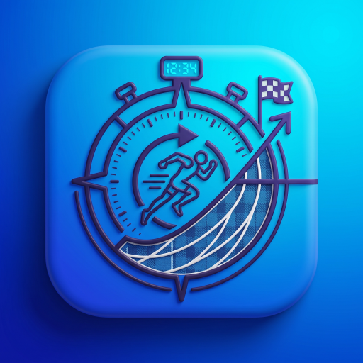

Track Splits
Versione 1.0.0
Cos'è Track Splits?
Track Splits è lo strumento definitivo e tascabile per atleti, allenatori e appassionati di atletica leggera. Nasce per sostituire calcolatrici e fogli di carta a bordo pista, offrendo un ecosistema completo per il calcolo dei ritmi, l'analisi tecnica e il tracciamento degli allenamenti. Funziona interamente offline, permettendoti di usarla anche dove la connessione è assente.
I Nostri Moduli
Il Calcolatore
Calcola ritmi al chilometro partendo da un tempo finale o viceversa. L'app scompone automaticamente il tuo tempo in frazioni da 100m, 200m o 400m per aiutarti in pista.
Database Atleti
Studia lo storico gare e i Personal Best. Utilizza l'esclusiva funzione comparativa 1 vs 1 (H2H) per sovrapporre i grafici di due atleti diversi e scoprirne le attitudini sul Radar.
Diario Allenamenti
Traccia i tuoi volumi di corsa. Sfrutta il "Costruttore di Ripetute" per simulare i tuoi lavori in pista (es. 10x400) e analizza la Dashboard Statistica per monitorare la proporzione mensile tra Lenti, Medi e Frazionati.
Calcolatore Ripetute
Strumento avanzato per pianificare le sessioni di interval training, calcolando i tempi target esatti per ogni frazione in base al ritmo prestabilito.
Punteggi FIDAL
Converti i risultati tecnici in punteggi tabellari ufficiali FIDAL per poter confrontare il valore di prestazioni ottenute in specialità diverse.
Predittore Gara
Usa i tuoi tempi recenti per stimare con precisione scientifica il tuo potenziale cronometrico su distanze differenti (es. dai 5km alla Maratona).
Zone Allenamento
Calcola le tue corrette zone di passo (Lento, Medio, Soglia, VO2Max) partendo dal tuo record recente, per evitare di allenarti al ritmo sbagliato.
Stretching & Mobilità
Libreria visiva di esercizi fondamentali per la flessibilità articolare e il recupero muscolare post-allenamento.
Pacer Intelligente
Genera una strategia di gara (Negative Split, Even, Positive) con una tabella passaggi adattata al tuo stile di corsa.
Coach Pacer
Modalità per l'allenatore: calcola passaggi simultanei per un gruppo di atleti che corrono la stessa gara a ritmi diversi.
News, Eventi & Gallery
Resta sempre aggiornato sulle ultime notizie e sfoglia la galleria fotografica per rivivere i momenti salienti della stagione.
Sviluppato con passione da Cris.
© 2026 Tutti i diritti riservati.